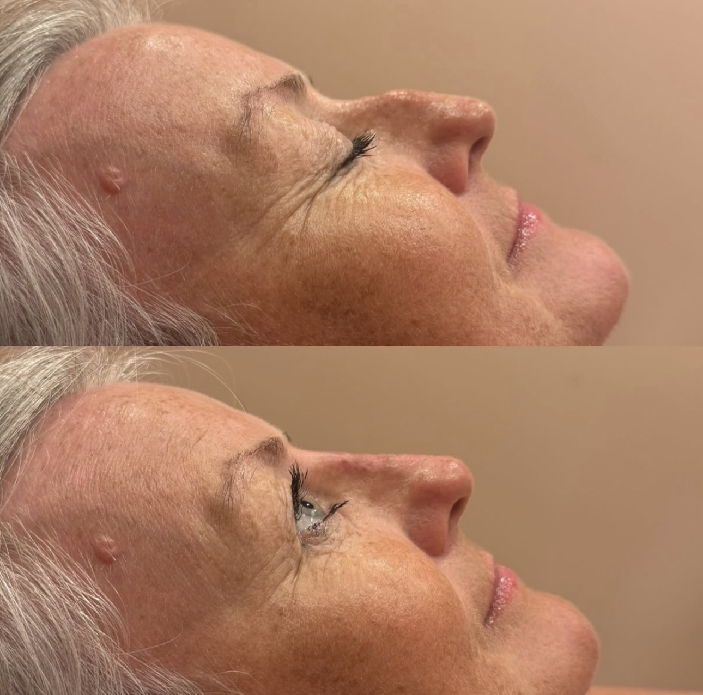

Real Results
See the natural, beautiful transformations our clients achieve
- Dorsal Hump Correction -

- Pixie Tip Enhancement -

- Bridge Enhancement -
Reshape and refine your nose without surgery
Transform your nose profile with our expertly administered non-surgical rhinoplasty treatments. Using premium dermal fillers, we can smooth bumps, refine the tip, and create beautiful symmetry - all without the need for surgery.

Non-surgical rhinoplasty, also known as a "liquid nose job," uses dermal fillers to reshape and refine the nose without the need for surgery. This innovative treatment can address many cosmetic concerns while maintaining the natural function of your nose.
Detailed assessment of your nose shape and discussion of realistic outcomes.
Topical numbing cream is applied and treatment area is cleansed and marked.
Precise filler placement using advanced injection techniques for optimal shaping.
Immediate transformation with final results visible within 2 weeks.
See the natural, beautiful transformations our clients achieve
- Dorsal Hump Correction -
- Pixie Tip Enhancement -
- Bridge Enhancement -
Transparent pricing for premium non-surgical rhinoplasty treatments
All prices include consultation, treatment, and aftercare advice. Touch-up treatments are available 4-8 weeks after initial treatment if needed.
Results typically last 9-12 months. The nose area tends to retain filler well due to less movement compared to areas like the lips.
Most clients find the treatment comfortable. We use topical numbing cream and the fillers contain lidocaine for additional comfort during injection.
Non-surgical rhinoplasty can only add volume and reshape - it cannot reduce nose size. It's perfect for smoothing bumps, lifting tips, and improving symmetry.
When performed by experienced practitioners, risks are minimal. Temporary swelling and bruising may occur. We follow strict safety protocols for nasal treatments.
Yes, hyaluronic acid fillers can be dissolved using hyaluronidase if needed, making this a very safe and reversible treatment option.
Results are immediately visible, though final results are best appreciated after any initial swelling subsides within 24-48 hours.
Book your consultation today and discover how non-surgical rhinoplasty can help you achieve the nose shape you've always wanted - without surgery.